Secret Travel & Tour, design v4 : cinq propositions et leur évaluation
Cinq agents ont travaillé chacun avec un regard différent sur les trois mêmes pages. Tous les prototypes marchent : on peut filtrer, calculer un prix, choisir une date et générer le message WhatsApp. Ils lisent les prix et les faits dans les données du site. Ce qui manque est marqué [DONNÉE À FOURNIR] dans les pages.
Les prototypes à essayer
Point de vue d'une grande plateforme de réservation : total du groupe partout, carte de réservation collante, liste de sorties, hub filtrable.
Accueil4 IslandsHubVariantesDirection artistique éditoriale : grande typographie, photo franche, la journée 4 Islands sur une carte qui avance pendant la lecture.
Accueil4 IslandsHubVariantesFluidité et interactions : la photo de la carte devient le hero de la page suivante, galerie au doigt, feuille de réservation qui suit le geste.
Accueil4 IslandsHubVariantesCaptures (bureau 1440 puis mobile 390, faire défiler chaque cadre)
Réservation
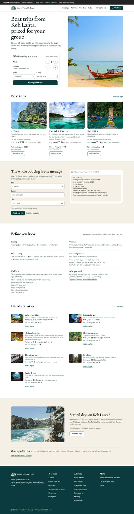
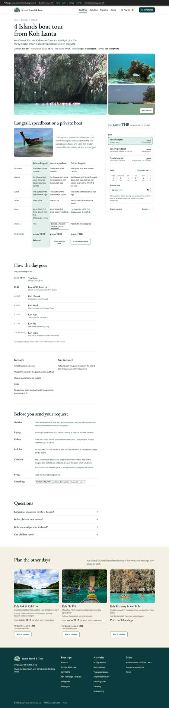
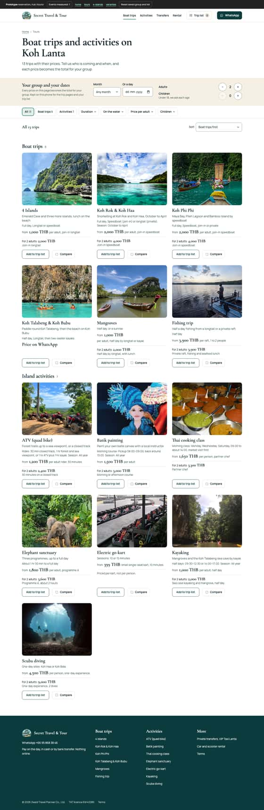
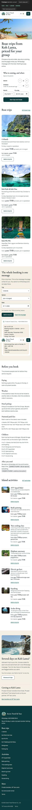
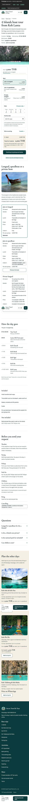
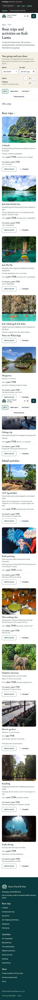
Récit
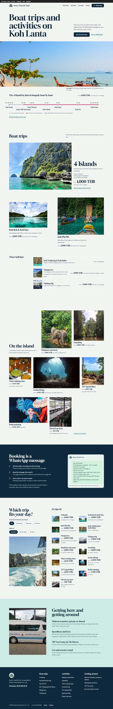
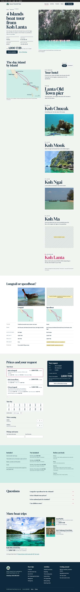
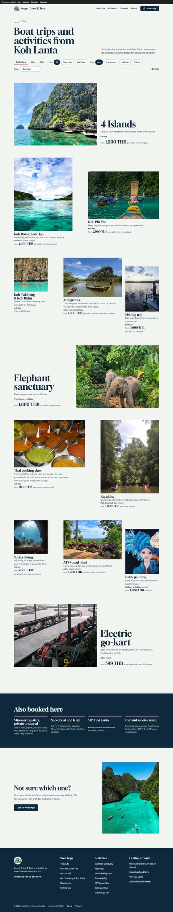
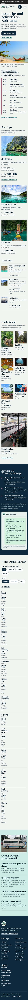
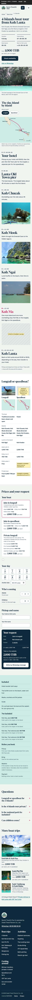
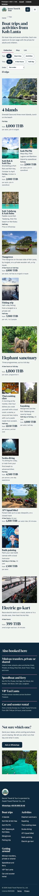
Mouvement
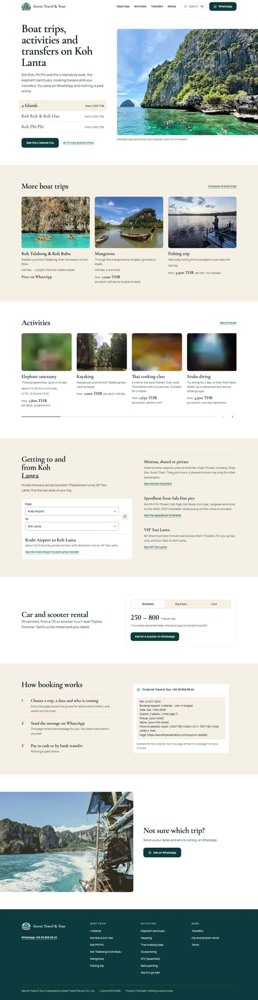
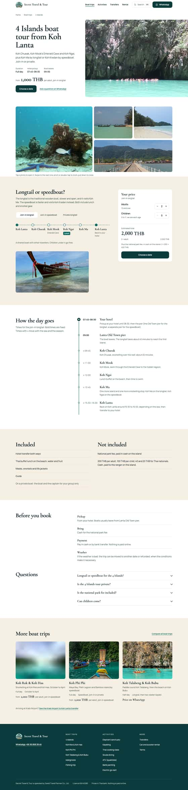
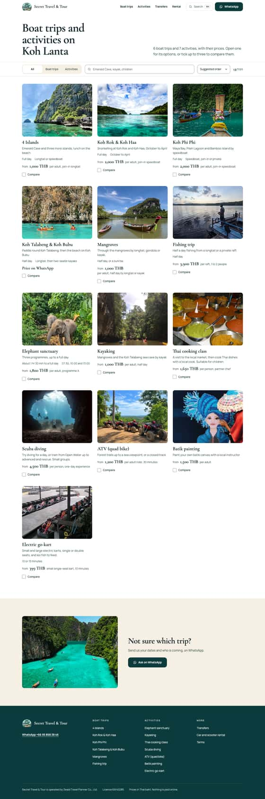
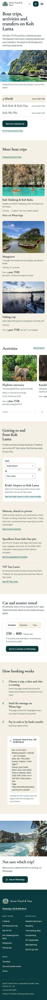
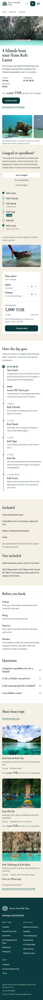
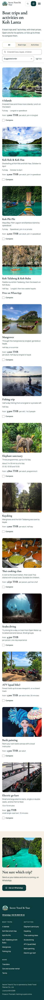
Mobile
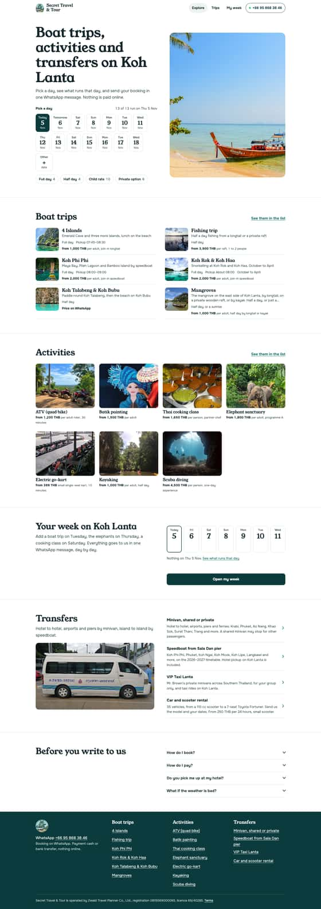
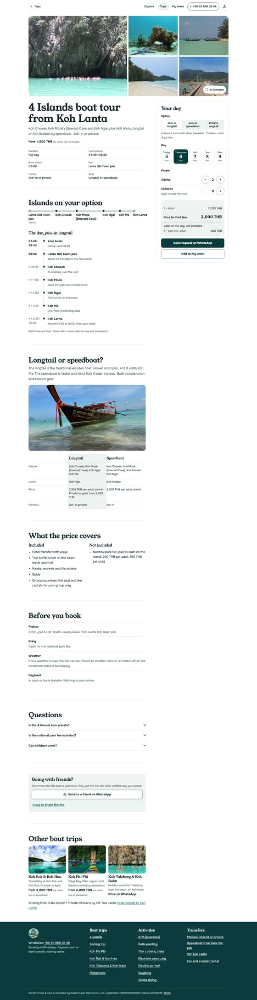
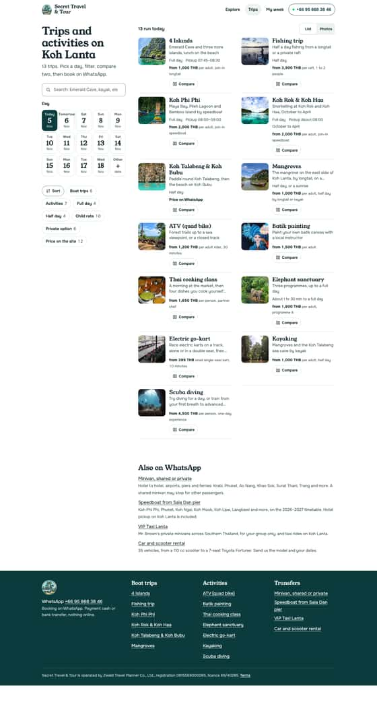
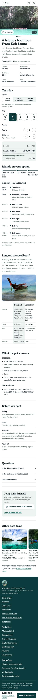
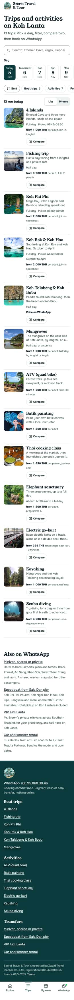
Rupture
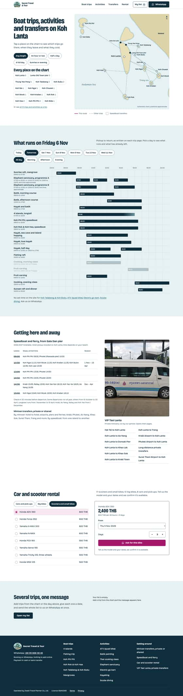
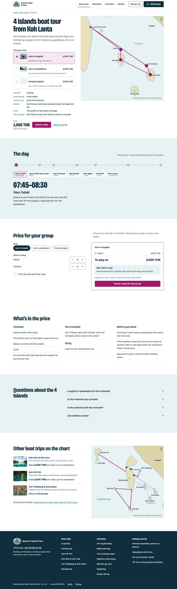
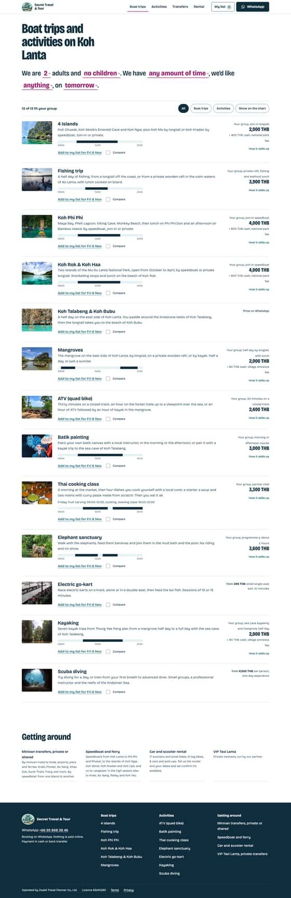
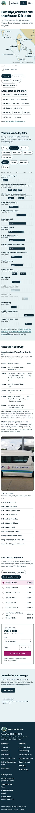
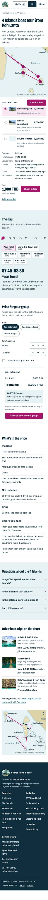
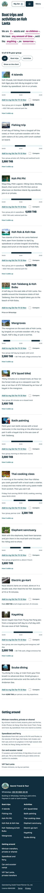
Évaluation idée par idée
Retenue : je la construis dans la v4. Plus tard : bonne idée qui attend une donnée ou une autre étape. Écartée : la raison est donnée. Les idées proches proposées par plusieurs agents sont regroupées.
| Idée | Proposée par | Verdict | Raison |
|---|---|---|---|
| Tout le site | |||
| Prix pour le groupe : âge de chaque enfant, total ligne par ligne, frais de parc en espèces à part | les cinq | Retenue | Première question d'une famille. Calculé depuis les données, rien à inventer |
| Liste de sorties sur plusieurs jours, envoyée en un seul message WhatsApp classé par jour | réservation, mobile, rupture | Retenue | Usage réel d'un voyageur qui reste une semaine. Une demande complète au lieu de trois |
| Alerte quand deux sorties d'une journée tombent le même jour, annulation d'une suppression | réservation | Retenue | Évite une demande impossible, coût faible |
| Groupe et dates gardés d'une page à l'autre, état dans l'adresse, lien à partager à un ami | réservation, mobile | Retenue | On ne ressaisit rien, le bouton retour garde les filtres |
| Ruban de dates à l'heure de Bangkok (Today, Tomorrow, 14 jours, autre date) | réservation, mobile, mouvement, récit | Retenue | Choisir une date en un geste |
| Disponibilité selon le jour : saison de Koh Rok, jours des cours de cuisine | mobile, rupture, réservation | Retenue | Seulement les règles écrites dans les fiches. Les autres sorties ne sont jamais dites « complètes » |
| La photo de la carte devient le hero de la page suivante, préchargement au survol ou au toucher | mouvement | Retenue | Effet « app » le plus net pour un coût faible. Sans effet sur Safari, sans rien casser |
| Retour au toucher sur boutons et cartes, en-tête qui se compacte au défilement | mouvement | Retenue | Petites choses qui font la sensation de qualité |
| Vignette floue puis photo en fondu | mouvement | Retenue | Plus de trou blanc au chargement. Jamais sur la photo du haut |
| Brouillon de demande gardé 7 jours, écran après ouverture de WhatsApp (copier le message, numéro de secours) | réservation | Retenue | Moins de demandes perdues entre le clic et l'envoi |
| Recherche ⌘K dans les faits | mouvement | Plus tard | 13 produits : le menu et les filtres suffisent aujourd'hui |
| Barre d'onglets en bas sur mobile | mobile, mouvement, rupture | Écartée | Entre en conflit avec la barre de réservation des pages produit. Deux barres basses, c'est une de trop |
| Mesure des étapes de réservation | réservation | Plus tard | Demande un choix d'outil de mesure et une bannière de consentement |
| Accueil | |||
| Grand titre, photo pleine largeur sans rien dessus, légende factuelle | récit | Retenue | Le plus vivant des cinq heros, la photo est montrée franchement |
| Hero à trois sorties au choix qui changent la photo | mouvement | Plus tard | Bonne variante, gardée si le hero photo ne convainc pas |
| La carte marine en accueil | rupture | Plus tard | Idée la plus originale, mais positions approximatives : il faut un vrai fond de carte. Elle entre d'abord sur 4 Islands |
| La journée 4 Islands en règle horaire de 07:45 à 16:00 | récit | Retenue | Signature du site, données réelles |
| Sorties en bateau en double page : 4 Islands en grand, les autres décalées | récit | Retenue | Casse la grille de cartes identiques |
| « What runs on … » : ce qui part tel jour, frise au bureau, matin, après-midi et soir sur mobile | rupture, mobile | Retenue | Répond à « on fait quoi demain ? », avec les horaires des fiches |
| Activités en planche contact, chaque photo dans son format | récit | Retenue | Rythme différent des bateaux, plus vivant qu'un rail |
| Rail d'activités au doigt | mouvement, mobile | Écartée | Cache la moitié des activités, la planche les montre toutes |
| Transferts : chercheur De / Vers avec la durée et le lien vers /taxi/ | mouvement | Retenue | Un geste au lieu d'une liste, la page reste celle de VIP Taxi |
| Location : type de véhicule, fourchette de prix, message prérempli | mouvement, rupture | Retenue | Données de rental.json, la location était absente de l'accueil |
| « How booking works » remplacé par le vrai message qui se compose quand on choisit une sortie | récit, réservation, mouvement | Retenue | Montre au lieu d'expliquer en trois étapes |
| Trouveur en questions ou phrase à trous | réservation, récit, rupture | Plus tard | Le hub filtré fait le même travail. À tester après la mise en ligne |
| Bande finale qui compose le message « Not sure which trip? » | récit | Retenue | La dernière section sert à quelque chose |
| 4 Islands | |||
| Hero en grande typographie, faits en quatre cases, photo de la grotte jusqu'au bord | récit | Retenue | Lisible d'un coup d'œil |
| Galerie en mosaïque, visionneuse au doigt (glisser, pincer, tirer pour fermer) | mouvement, mobile | Retenue | Les gestes d'une app photo, sans bibliothèque |
| Carte du trajet qui reste à l'écran, le bateau avance avec la lecture, bascule longtail ou speedboat qui redessine la route | récit, mouvement | Retenue | L'idée la plus forte des cinq propositions. Contours d'îles OpenStreetMap, carte marquée schématique |
| Comparateur des trois bateaux avec une ligne « pour votre groupe » | réservation | Retenue | La vraie hésitation est entre les bateaux |
| Carte de réservation collante au bureau, feuille au doigt sur mobile, deux étapes | réservation, mouvement | Retenue | Le prix et le bouton restent sous les yeux |
| Ordre des îles au choix en bateau privé | rupture | Plus tard | À confirmer avec l'opérateur avant de le proposer |
| Curseur horaire qui déplace le bateau | récit, mouvement, rupture | Écartée | Doublon de la carte qui avance avec la lecture |
| Réponses qui s'ouvrent en douceur | mouvement | Retenue | CSS seul |
| « Plan the other days » en fin de page, relié à la liste | réservation | Retenue | Suite naturelle après une première sortie |
| Hub | |||
| Bloc « Your group and your dates » : chaque carte affiche le total du groupe | réservation | Retenue | Compare les vrais montants |
| Filtres avec compteurs, état vide qui propose le filtre à retirer, cartes qui glissent à leur place | réservation, mouvement, mobile | Retenue | Jamais d'impasse |
| Comparateur de deux ou trois sorties | réservation, mobile, mouvement, rupture | Retenue | Quatre agents sur cinq l'ont proposé |
| Trois vues : collection, liste triable, carte | récit | Retenue sans la carte | La carte attend le vrai fond de carte |
| Aperçu en feuille sans quitter le hub | mouvement, mobile | Plus tard | Double emploi avec la page produit et sa transition |
| Calendrier mois par mois des 13 sorties | réservation | Plus tard | La saison manque pour 9 sorties sur 13 |
Données que les agents ont tous cherchées
- 4 Islands en speedboat : horaires étape par étape, ponton de départ, prix des moins de 4 ans.
- Frais de parc : âge du tarif enfant, et si les moins de 4 ans paient.
- Bateau privé : les enfants comptent-ils dans le nombre de personnes ?
- Saison des 9 sorties qui n'en ont pas, mois de fermeture du parc national.
- Tranche d'âge enfant : 4 à 11 ans sur le site, 4 à 10 ans dans le registre.
- Prix de Koh Talabeng & Koh Bubu, délai de réponse sur WhatsApp, conditions d'annulation.
- Photos réelles : speedboat, Koh Ma, buffet sur la plage, location.